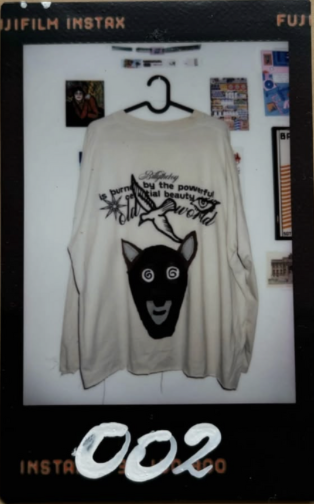
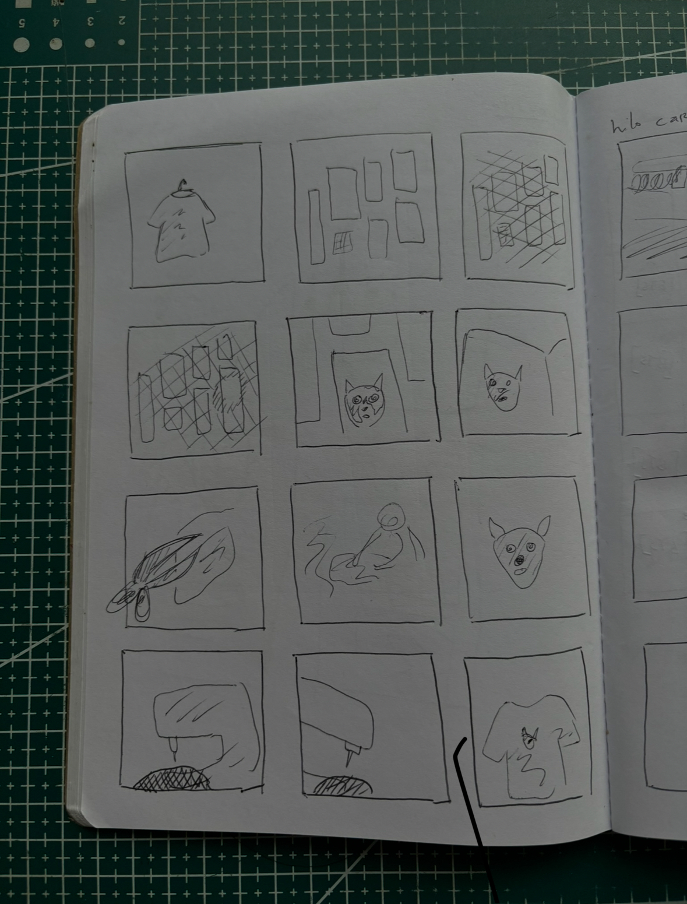
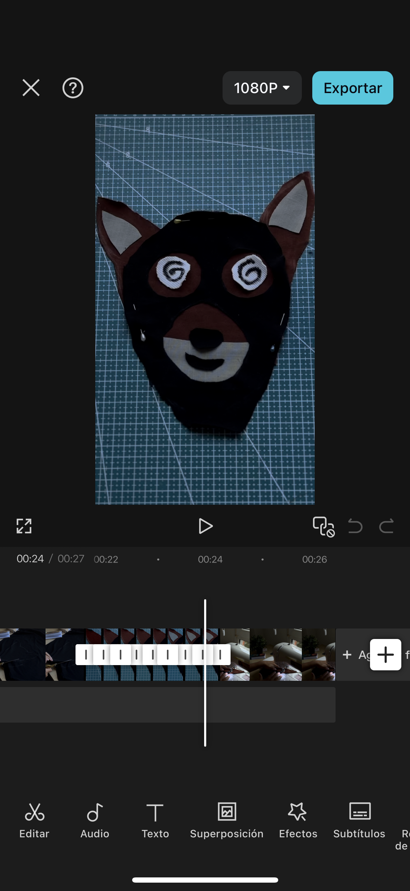
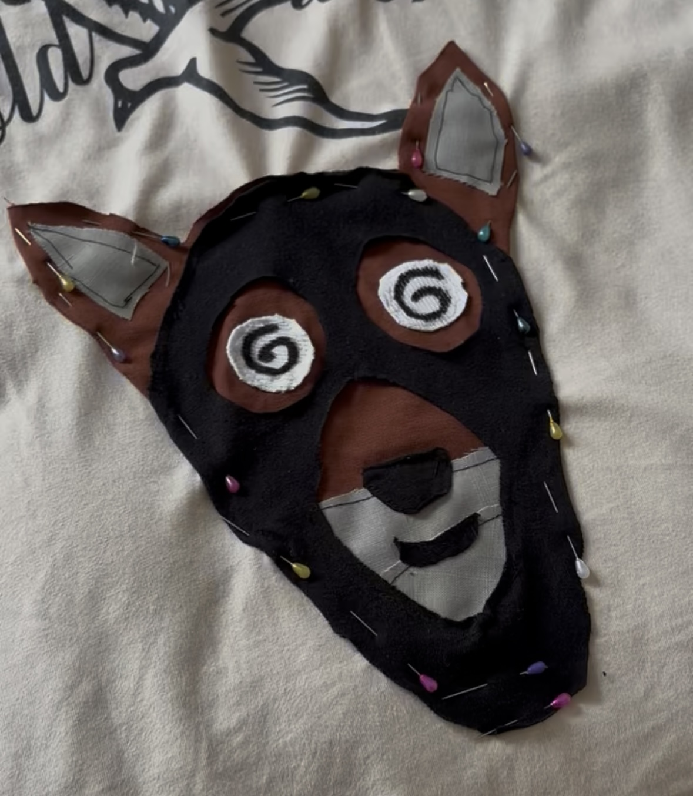
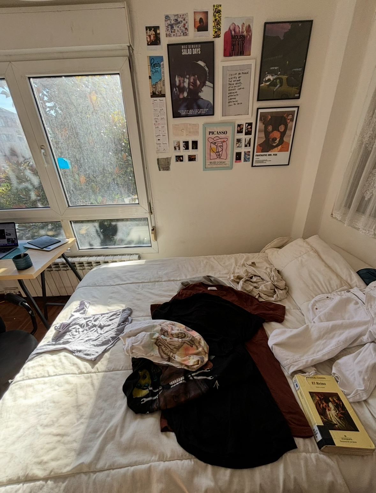
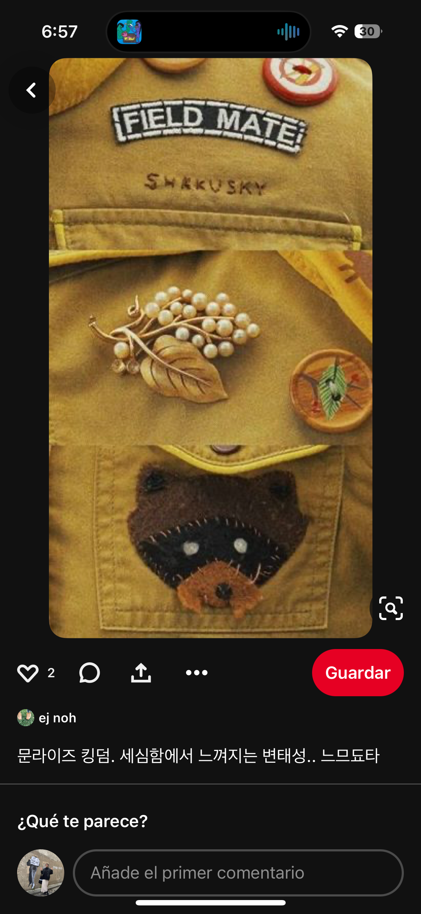
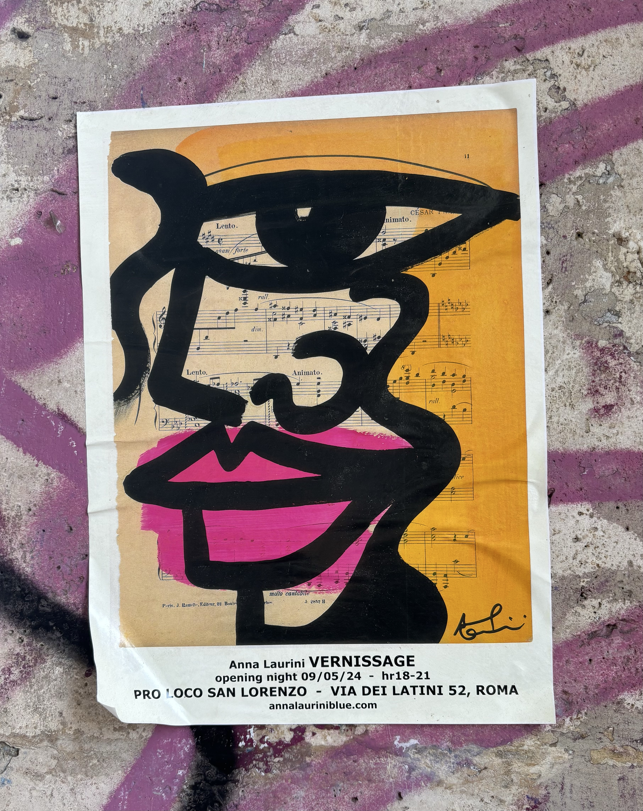
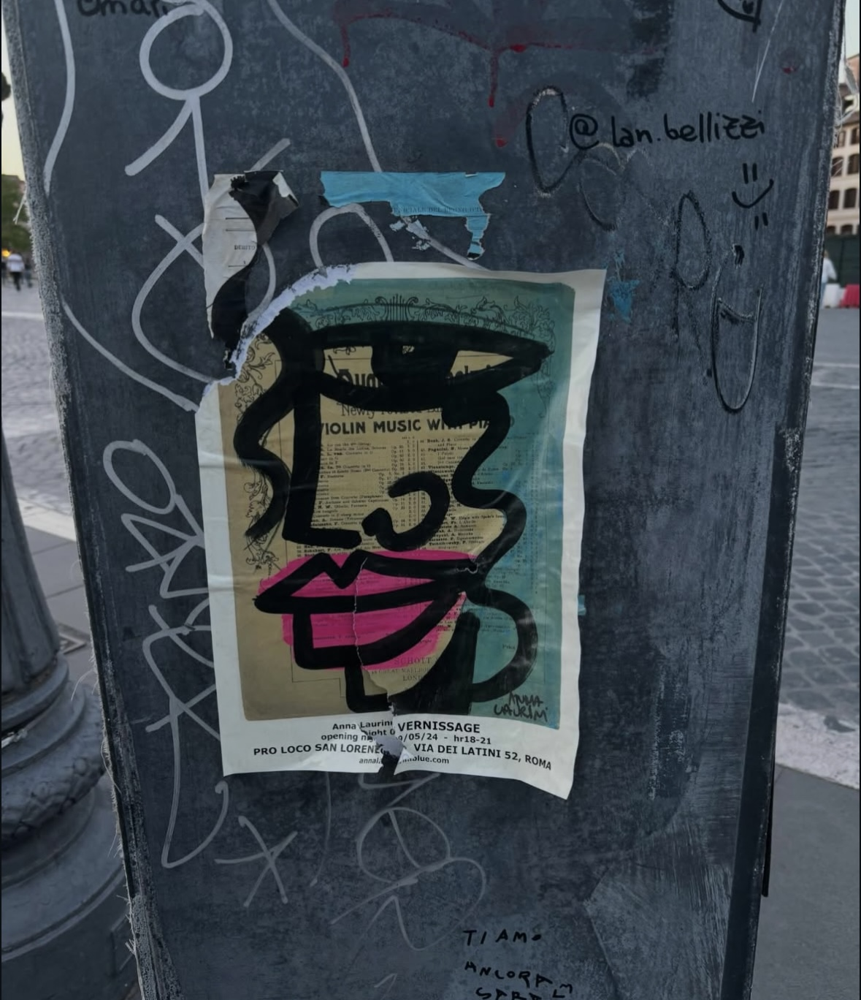

the inspo to share
when i read this book for the first time
it really changed my mind
i started to think more about the process
rather than the product
because, at the end of the day, its about the journey



